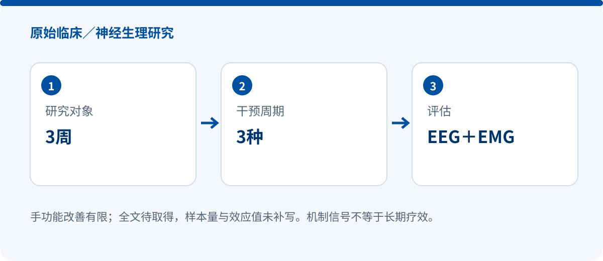

Three-week passive robotic hand therapy: limited hand-function gains alongside neurophysiological changes
CLINICAL / NEUROPHYSIOLOGY STUDY
The Impact of Three-Week Passive Robotic Hand Therapy on Stroke Patients
Xinhang Li, Minjun Zheng, Jinbiao Liu, Li Zhang, Lizi Jiang, Shiwei Zheng, Linqing Feng, Tao Tang, Lei Ling, Xiangming Ye, Yina Wei
Intelligent Robotics and Applications, ICIRA 2023, LNCS 14267
DOI: 10.1007/978-981-99-6483-3_21 · Original record
SY-HR08P | EEG + EMG | Three movement modes

Research design
The study used EEG and EMG to assess three weeks of passive robotic hand therapy and applied source-localization techniques to compare electrical activity across left and right sensorimotor regions. The publisher abstract identifies the device as the SY-HR08P from Shanghai Siyi Intelligence Technology Co., Ltd.
Three movement modes were examined. Changes in sensorimotor-region brain activity did not differ significantly among the modes. After active-mode training, beta- and gamma-band EEG–EMG coherence increased, which the authors interpret as a signal of more efficient neural drive to muscle activity.
Key findings
- Hand-function improvement was limited; the study should not be framed as evidence of substantial functional recovery.
- The abstract reports overall improvement in brain activity, but no significant between-mode difference in sensorimotor-region change.
- The beta/gamma coherence finding after active-mode training is neurophysiological evidence, not proof of durable clinical benefit.
Why it matters
For clinical communication, the chapter links training mode with brain activity and neuromuscular coupling. It suggests that robotic hand training can be evaluated through physiological mechanisms as well as functional scales, but mechanistic signals must remain separate from claims about functional or long-term benefit.
Evidence boundaries
- Full text pending: sample size, comparator details, attrition and exact statistics remain unverified.
- The abstract describes limited hand-function improvement and must not be rewritten as definitive efficacy evidence.
- EEG–EMG coherence is a physiological surrogate, not a direct measure of daily-living improvement.
Source and verification
Device names, sample accounting and numerical results follow the verified source scope stated above. No missing values are inferred.